Tiramisu-oppskrift for dummies! Veldig enkel, veldig god!
Den italienske desserten Tiramisú, som faktisk er relativt ny (ble utviklet på 70-tallet), har alltid fascinert meg. Likevel er jeg som regel skuffet hver gang jeg bestiller en Tiramisú når jeg er ute på restaurant. Etter mye prøving og feiling, har jeg kommet frem til denne, som kanskje må sies å være europas nestbeste Tiramisú (Den beste finnes kun i ideenes verden, jf Platon).
Det største problemet med en Tiramisú, er å finne den essensielle mascarponeosten, viser det seg. Det er egentlig ikke vanskelig, men jeg slet virkelig med å få tak i en i romjula.
Først prøvde jeg på min nærbutikk Maxi på Bjølsen. Tomt. Jeg gikk til Storo-senteret, for der vet jeg at de har det. Tomt. Videre går ferden til MatogMer på Bjølsen. Tomt! Innom Sagene Torg. Tomt.
Jeg ringer til Gutta på Haugen, og de kan fornøyd fortelle at de har masse mascarpone.
Lucas hopper på 37-bussen, ut av bussen og går nesten inn på Gutta. Hvorfor går jeg ikke inn? Fordi jeg har fått det for meg at Smart Club på Bislet ikke bare har Mascarpone, men mye annen digg mat. Og Gutta er jo ganske dyrt. Vel, jeg spaserer ned til Smart Club i -10 grader for å finne ut at de IKKE har Mascarpone. Ja ja, jeg gjorde et forsøk. Dessuten har jeg alltids Gutta på vei hjem.
Jeg kjemper meg frem i vinden, inn i butikken, innerst i lokalet hvor de pleier å ha osten er det selvfølgelig tomt, så jeg spør: -Hei, har dere masacarpone? Gutten går inn på lageret etter den vanskelige osten. Han kommer ut igjen med telefonen på øret. , "”": Hvor er mascarponen, a?”, spør han leverandøren som visstnok skal ha levert osten tidligere på dagen. , "”": Hva, leverte du ikke?”
Jeg merker jeg blir irritert. , "”": Behold roen, Lucas. Det er sikkert en forklaring på dette”, sier jeg til meg selv.
Vel, sier Gutten. -Vi har ikke mascarpone. Beklager.
HVA! JEG RINGTE JO, FOR FAEN! DERE SA DERE HADDE MASSEVIS!
Sjefen overhører samtalen og kommer ut fra kontoret innerst i butikken: Hva vil du vi skal gjøre?, spør han litt aggressivt.
– Dere kan blant annet begynne med å sjekke om dere har varen når noen ringer butikken og spør, tenker jeg inni meg. Jeg orker ikke en konfrontasjon, heiser armen og sier farvel.
Heldigvis stopper bussen rett utenfor, jeg hopper på, og av på Oslo City. Menyen i kjelleretasjen pleier jo å ha en del. Jeg leter febrilsk i alle ostehyller. NEI! De har bare Ricotta! Eller vent.. JO, der er den. 15 bokser med Mascarpone. Jeg trenger kun tre, men vurderer å kjøpe alle, og låse dem inn i en safe. Men det holder med tre for denne gang. Og så til oppskriften!
6 dl sterk svart kaffe (romtemperatur)
1 1/2 ss pulverespressokaffe
9 ss mørk rom
6 store eggeplommer
1,6 dl sukker
1/4 ts salt
750 gr mascarpone-ost
1,8 dl kremfløte (kald)
400 gr fingerkjeks (savoiardi)
3 1/2 ss kakao
0,6 dl mørk sjokolade (valgfritt)
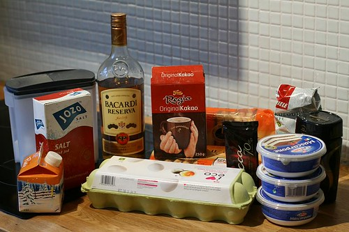
Her er alle ingrediensene. (Fra venstre) Sukker, salt, fløte, rom, egg, kakao, fingerkjeks (i bakgrunnen), sjokolade, kaffe, espressopulverkaffe, mascarponeost.
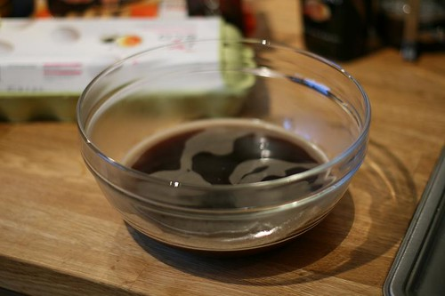
Kok kaffen, og hell oppi en bolle. (6 dl sterk svart kaffe (romtemperatur))
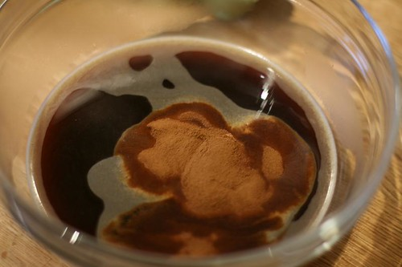
Oppi med espressokaffepulveret. (1 1/2 ss)
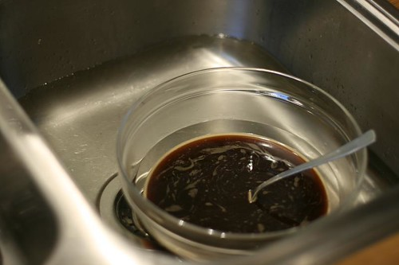
Avkjøl til romtemperatur i vasken. Fyll opp vann. IKKE I BOLLEN, MEN RUNDT.
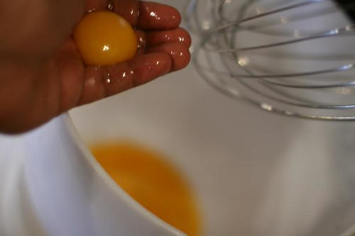
Putt eggeplommene i miksern! (6 eggeplommer)
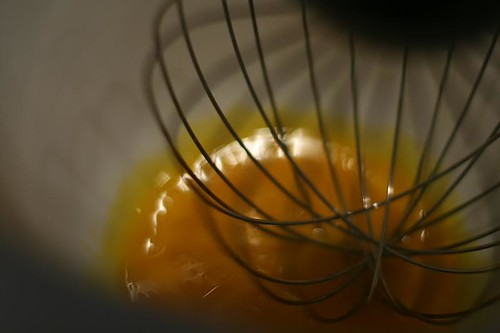
Miks i 1 min!
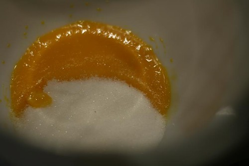
Oppi med sukkeret (1,6 dl) og saltet (1/4 ts), og miks videre.
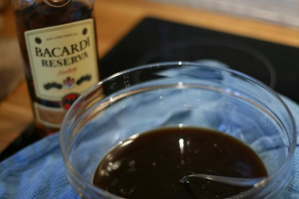
Min kjøkkenmaskin gjør jobben alene. I mens tar jeg ut den avkjølte kaffevæsken, og heller oppi 5ss Rom. (Resten av romen skal oppi kremen)
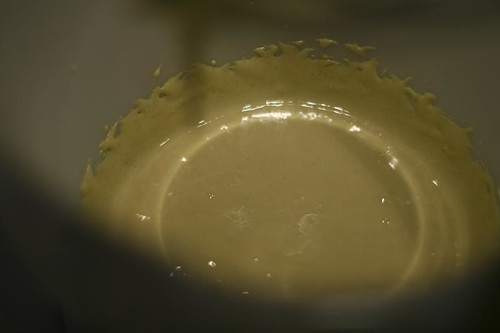
Miks til du får en tykk gul nestenkrem.
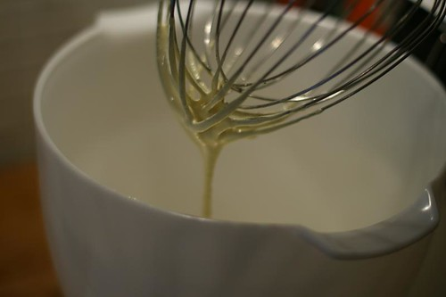
Slik som dette.
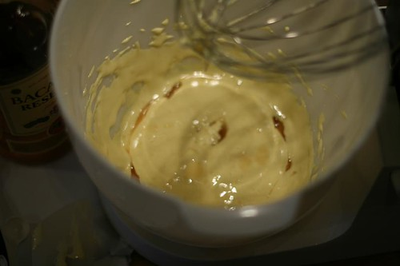
Oppi med resten av romen (4 ss)
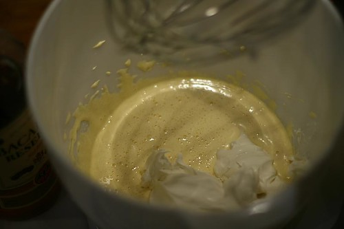
så var det tid for mascarponen (750 gram eller 3 pakker)!
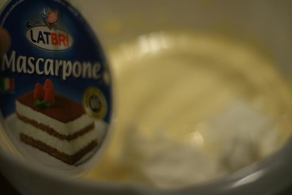
Et unødvendig bilde her, ja.
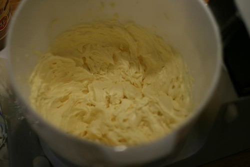
Miks til du får en tykk gul krem.
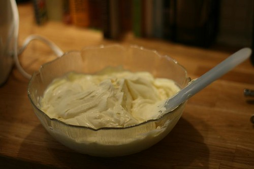
skrap bolleinnholdet (kremen) og legge i en skål.
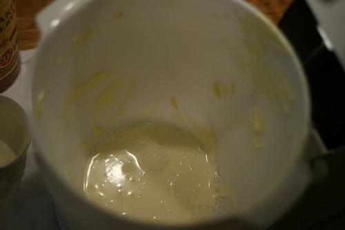
Nå er det fløtens tur. Hell oppi fløten (1,8 dl) i miksebollen. Du trenger ikke vaske den.
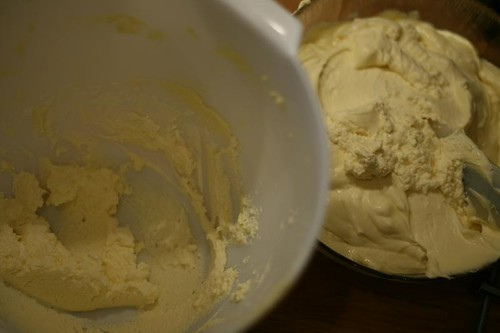
Når kremen har tatt form, så skal den inn i mascarponekremen. men… les videre
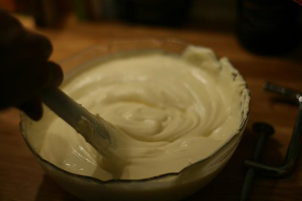
Bland kun inn 1/3 av kremen i den mascarponekremen, helt til den ikke er synlig lenger. Og fortsett på samme måte med de resterenede 2/3 delene. Bruk en slikkepott. Det er enklest.
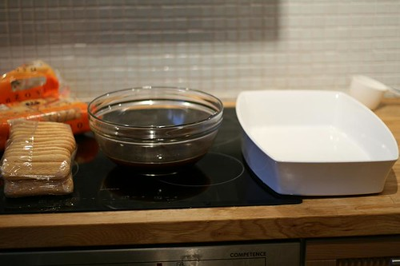
så var det fingerkjekstid. Finn frem en form som kaken skal ligge i. Line up kjeks, kaffeguffen og formen.
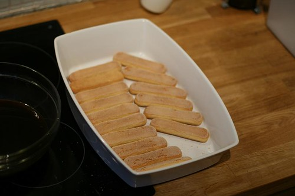
Se om fingerkjeksen passer i formen. Knekk til hvis ikke alle passer helt. Ta dem deretter ut igjen.
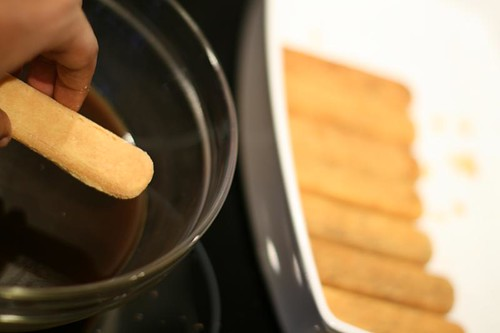
Så, og dette er viktig, skal det dyppes! Kun rask dypping på beggesider av kjeksen, ikke legg hele kjeksen under kaffen. TRO MEG, du kommer til å angre. 1 sek dypp på hver side er alt som trengs, og så plasserer du de ferdigdyppede kjeksene i formen slik som på bildet.
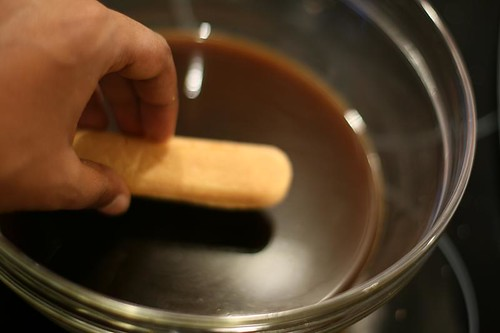
Altså: KUN DYPPING!
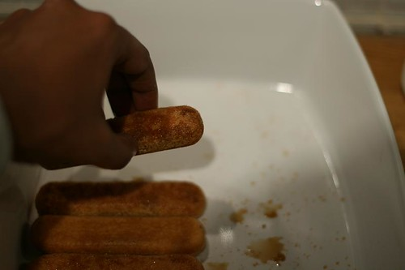
Plasser i formen etter hverandre (ser litt ut som fiskepinner, gitt)
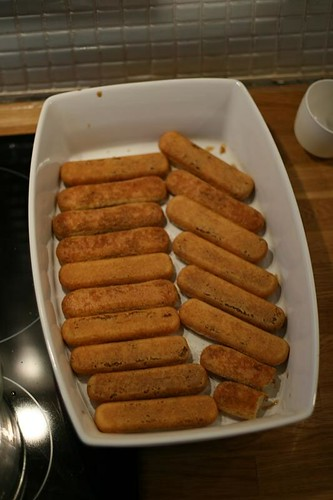
Eller hva?
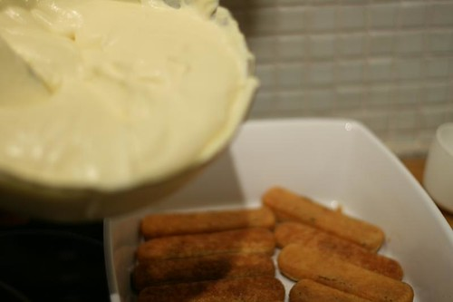
Gjør klar kremen!
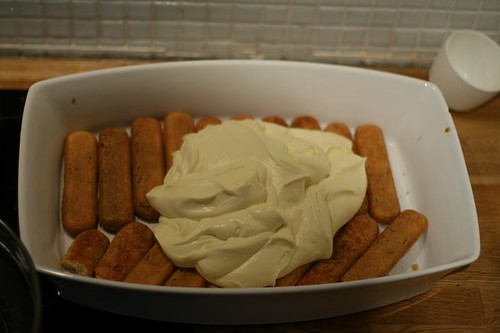
Hell halvparten av kremen over.
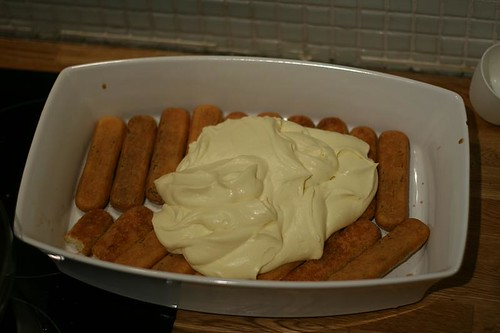
Slik!
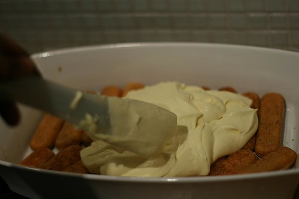
Spre kremen i et jevnt lag over kjeksen.
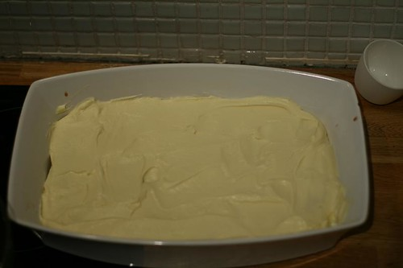
Slik skal det nå se ut. Hvis ikke, er du enten en dårlig kokk, eller veldig veldig dårlig til å følge en oppskrift.
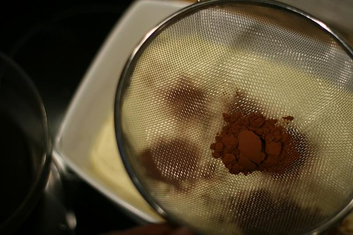
Sil halvparten av kakaoen (halvparten av 3,5 ss) over i et jevnt lag. Se neste bilde for hvordan det skal se ut når du er ferdig.
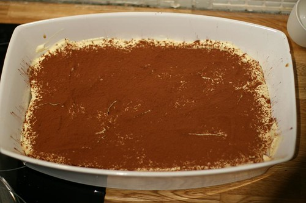
Skjønner du? Men du er bare halvveis nå.
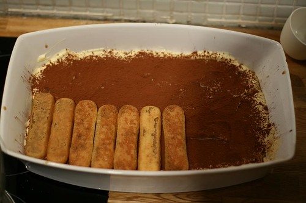
Nytt lag med ferdigdyppede kjeks.
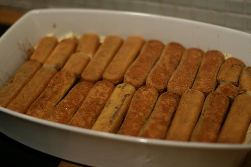
Se så fint det blir hvis du har litt tålmodighet.
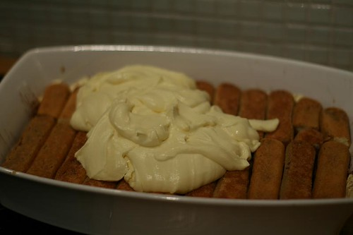
Nytt lag med krem (resten).
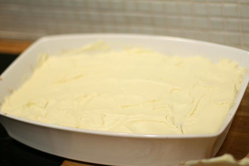
Smør på nytt utover i jevnt lag.
Avslutt med kakaodryss (halvparten av 3,5 ss)! FERDIG! DU HAR NETTOPP LAGET EN FANTASTISK TIRAMISU! Så, dekk til med plastfolie, og la den hvile i kjøleskapet i minst 6 timer før servering. Og rett før du serverer, RIVER DU SJOKOLADEN OVER KAKEN. Hvis du prøver denne oppskriften, blir jeg veldig glad for om du legger igjen en kommentar med din erfaring. PS: Legg igjen epost-adressen din her, så sender jeg den en mail når jeg legger ut neste oppskrift.